Adversarial examples crafted from the same image share the same underlying content, so a mixture of experts applied off the shelf to multi-perturbation adversarial training breaks down in two ways.
Conventional disjoint experts have no shared backbone to absorb threat-common features, so they redundantly capture the same representations.
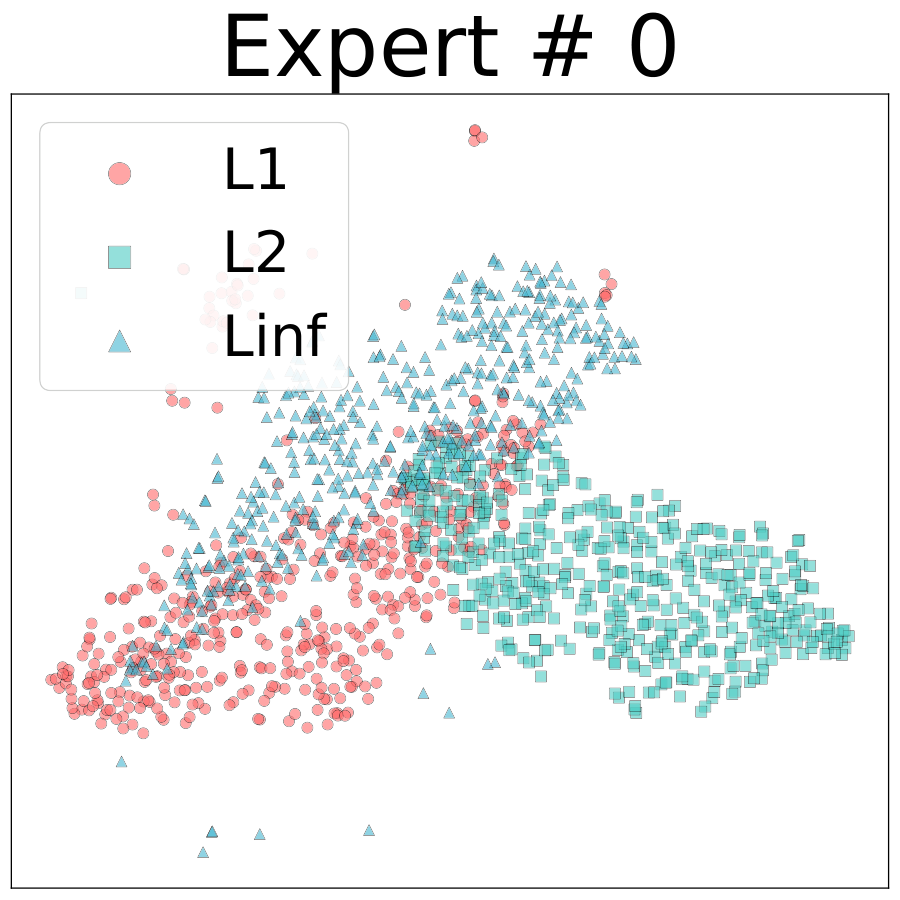
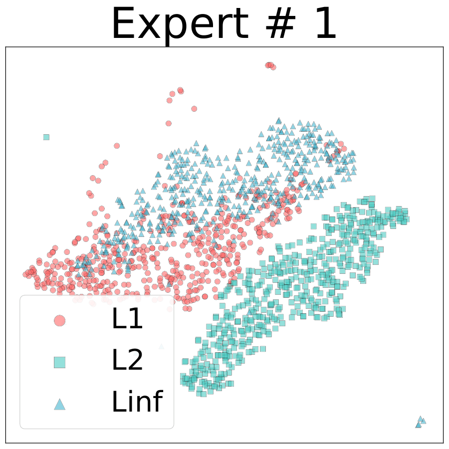
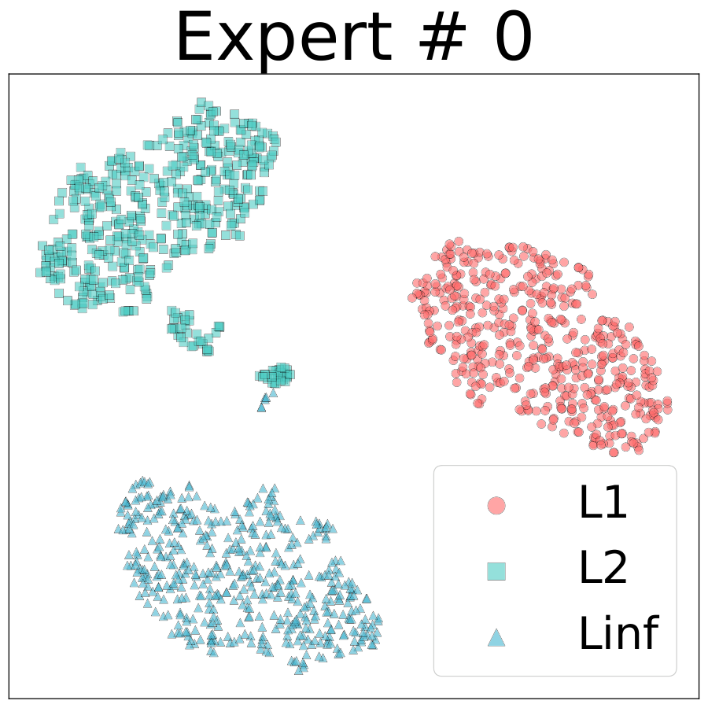
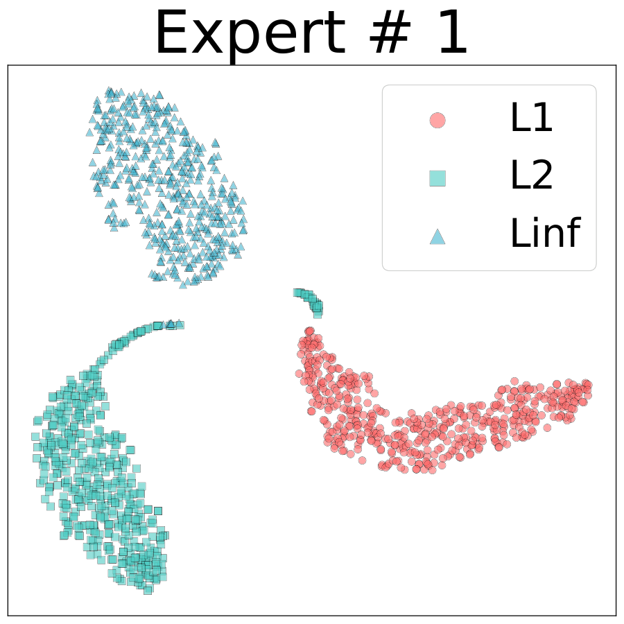
t-SNE of expert outputs on CIFAR-10. Conventional experts redundantly capture threat-common features while the low-rank experts of RoME capture threat-specific features.
Because the signal separating one threat from another is weak, the gating network converges to nearly identical routing for every threat, and standard remedies do not help.
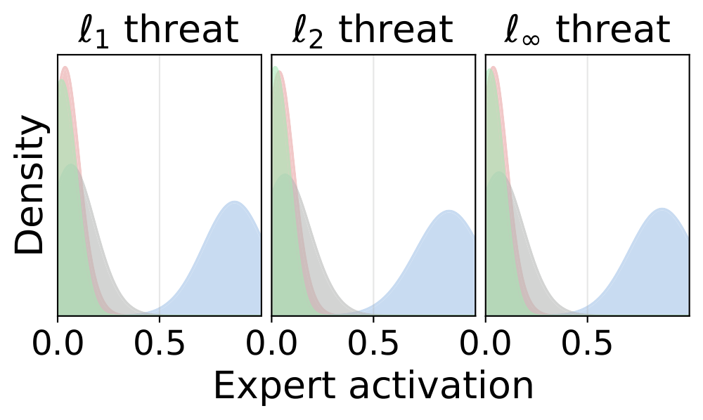
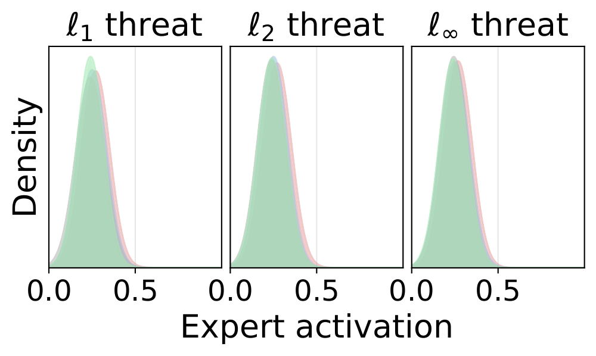
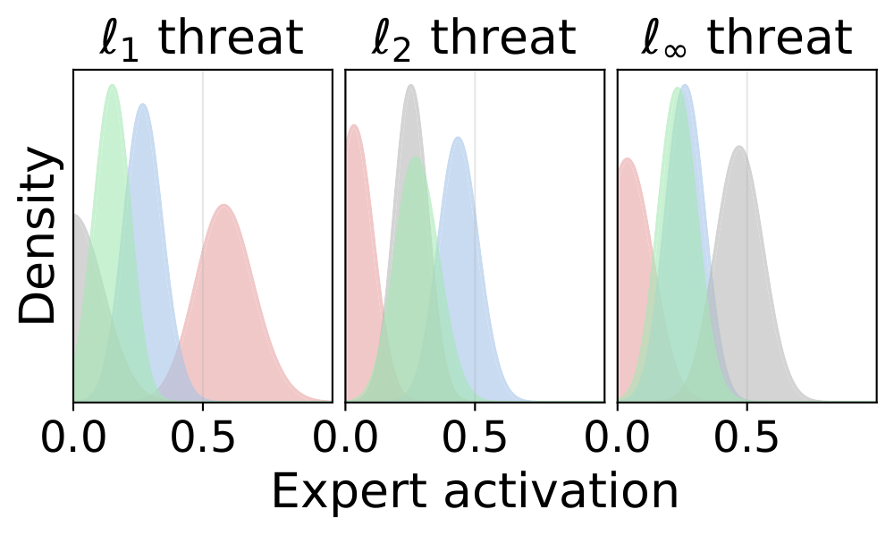
Expert activations across threats on CIFAR-10. (a) Naïve MoE suffers from routing collapse, where Expert 1 dominates, as well as threat-agnostic routing. (b) Load balancing resolves routing collapse but routing stays threat-agnostic. (c) RoME learns diverse, threat-specific expert combinations.
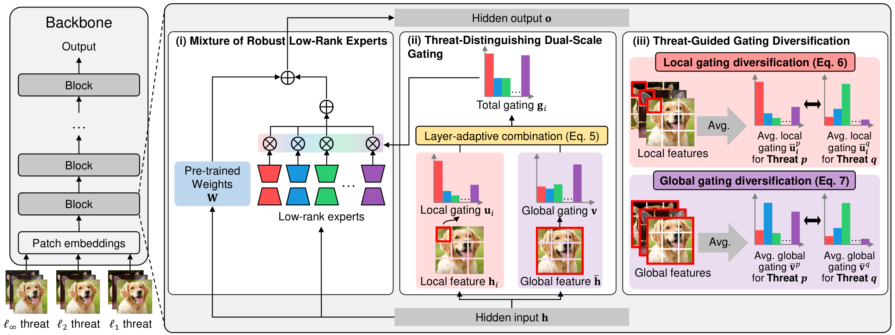
Overview of RoME. A shared backbone holds threat-common features while low-rank experts focus on threat-specific information, and the gating is made threat-aware by dual-scale inputs and an explicit diversification objective.
Each expert is a small low-rank update added on top of the shared backbone rather than a separate full network. The backbone can then hold whatever every threat has in common, which leaves each expert free to specialize on one threat. Conventional disjoint experts have no shared part to fall back on, so they spend their capacity relearning the same common features. Keeping the experts low-rank also means the whole model stays close to the size of a single baseline network.
The gating network reads the input at two granularities at once, one gate over each patch and one over the whole image. This matters because threats reveal themselves at different scales. Sparse ℓ1 perturbations are visible in patch-level features, while uniform ℓ∞ perturbations only stand out once features are pooled across the image. A gate that sees a single scale cannot tell all three threats apart, and routing falls back to one shared pathway. A layer-adaptive mix leans on the global gate in early layers and on the local gate in deeper ones, where each signal is strongest.
A training objective that pushes the average routing pattern of each threat away from that of every other threat. Richer gate inputs alone are not enough, since the gate still drifts toward one routing pattern without explicit supervision. This term forces genuinely distinct expert combinations per threat and is what turns the experts into separate model pathways. Threat labels are used only during training, so at test time the gate picks the combination on its own and the model still handles threats it never saw.
RoME is modular and plugs into existing multi-perturbation adversarial training methods. Results below are on CIFAR-10 with ViT-B under AutoAttack.
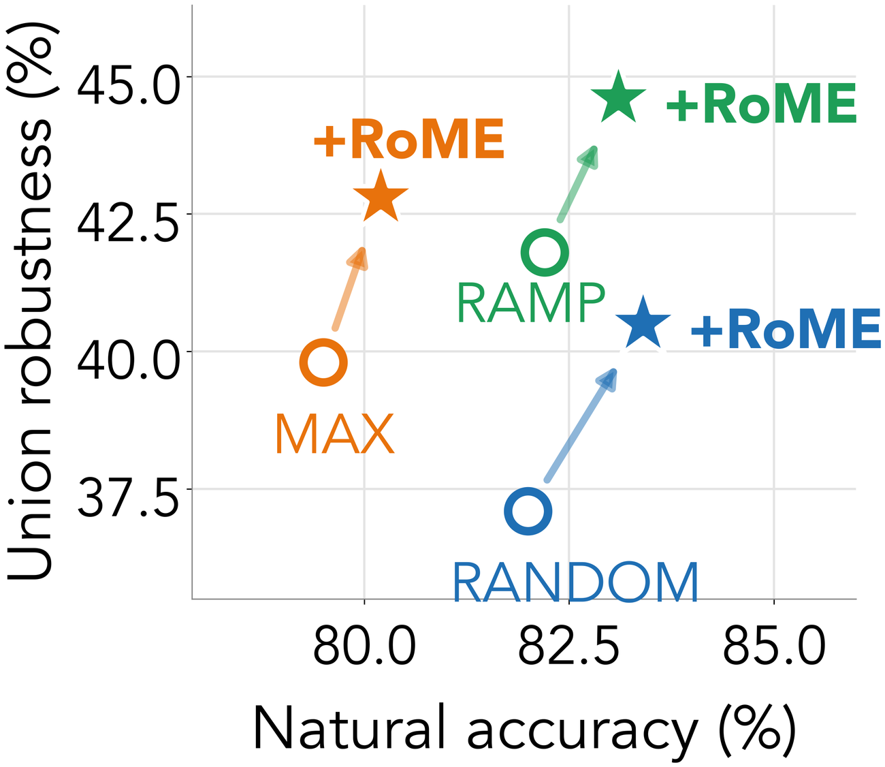
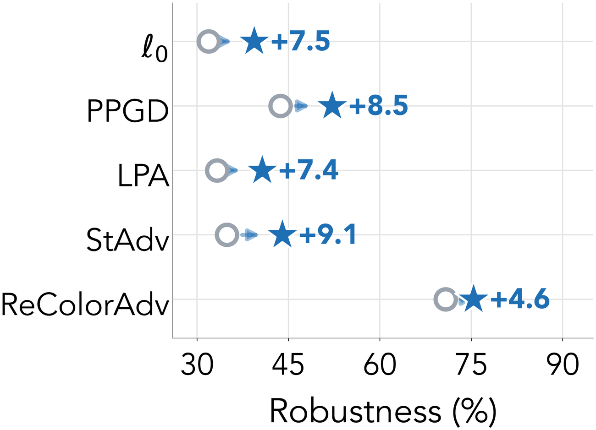
Adding RoME moves RANDOM, MAX and RAMP up and to the right, so worst-case union robustness across ℓ1, ℓ2 and ℓ∞ improves without giving up clean accuracy. The diverse pathways learned across experts also generalize to threats never seen during training, including sparse, perceptual, spatial and semantic attacks.
Different ℓp threats applied to different regions of one image, with the resulting per-patch expert activations.
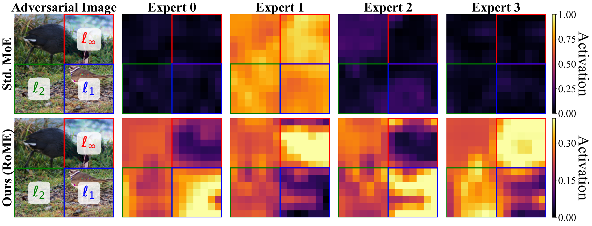
Standard MoE (top row) routes every threat to the same expert. RoME (bottom row) activates a different expert for each threat, confirming that each expert specializes in a distinct threat type.
Measured on ViT-B against the RANDOM baseline.
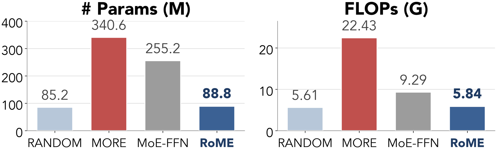
A mixture of FFN experts and MORE cost 3× and 4× more parameters. RoME reaches state-of-the-art union robustness at only 1.04× the parameters and 1.04× the FLOPs of the baseline.
@article{kim2026rome,
title={RoME: Robust Mixture of Low-Rank Experts against Multiple Adversarial Perturbations},
author={Kim, Woo Jae and Min, Kyle and Ha, Suhyeon and Jeon, Joonsung and Yoon, Sung-eui},
journal={arXiv preprint arXiv:2607.06109},
year={2026}
}